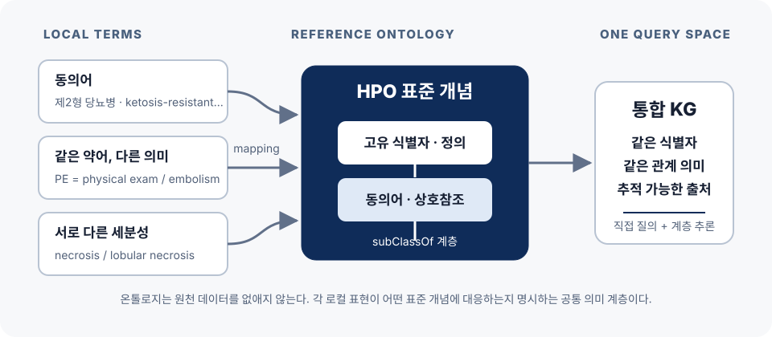
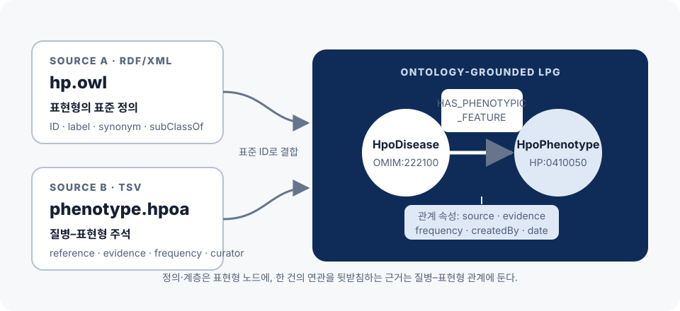
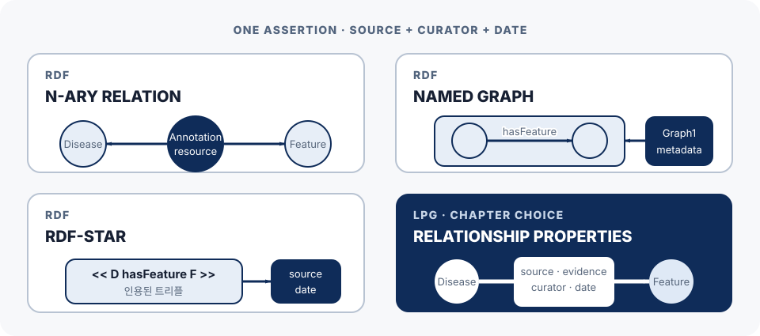
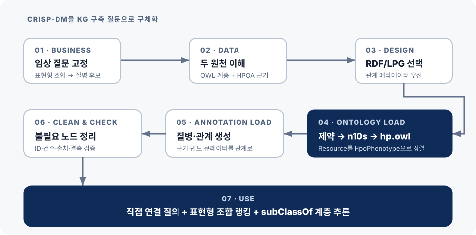
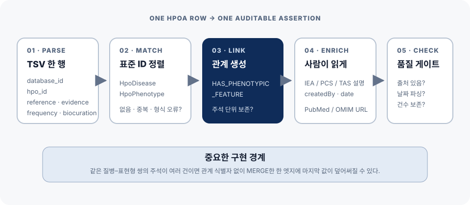
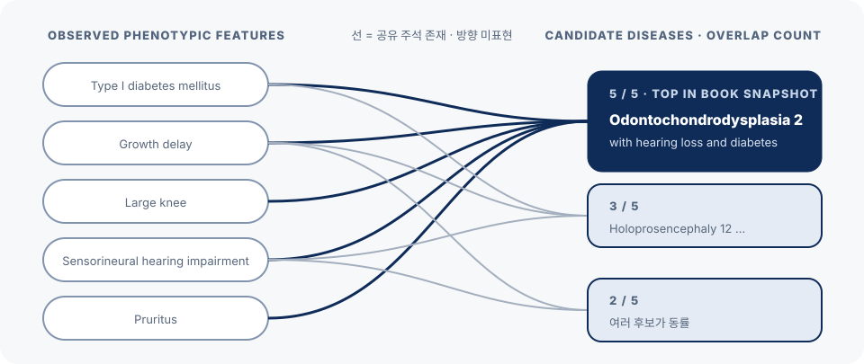
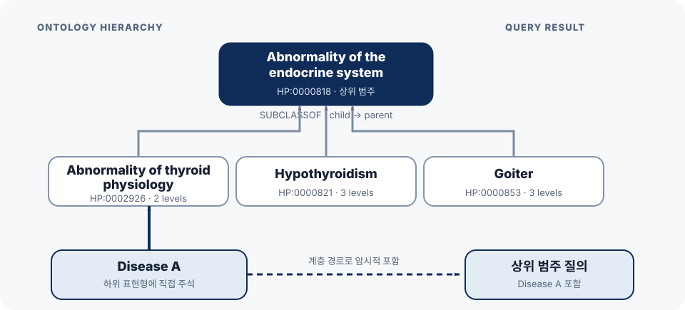

RAW INTEGRATION
형식만 맞춘 데이터
- 같은 개념이 여러 이름으로 흩어짐
- 같은 약어가 서로 다른 뜻을 가짐
- 연결의 출처와 증거를 잃기 쉬움
Knowledge Graphs & LLMs in Action · Chapter 03
임상 질문에서 HPO 그래프·질의·추론까지
희귀질환 후보를 찾으려면 형식 통합보다 먼저 질문·표준 의미·연결 근거를 고정해야 합니다.
RAW INTEGRATION
ONTOLOGY-GROUNDED KG
오늘의 질문 — 어떤 설계 순서가 그래프를 “저장소”에서 “검토 가능한 임상 지원 도구”로 바꾸는가?
도구 기능이 아니라 각 단계가 남겨야 할 검증 산출물을 중심으로 봅니다.
임상 질문과 HPO 참조 개념
RDF/LPG 선택과 두 원천 결합
후보 경로와 계층적 포함
마지막 결정 — 버전·주석·추론·임상 판단의 경계를 어디에서 검증할 것인가.
REPORT §1 · PROBLEM & DOMAIN
형식이 아니라 의미 이질성을 해결할 공통 좌표를 만든다
01
같은 “당뇨병”도 질병과 표현형이라는 서로 다른 역할을 가질 수 있습니다.
HPO ID와 계층으로 표현한다.
OMIM 등 독립 식별자로 표현한다.
출처·증거·빈도·작성일을 관계에 둔다.
질병명만 아니라 경로와 근거를 반환한다.
모델의 출발점 — 임상의가 결과 화면에서 확인해야 할 연결과 근거가 노드·관계·속성을 결정합니다.

hp.owl: ID·정의·동의어·계층phenotype.hpoa: 질병 연관·출처·증거표준 hpo_id가 결합 키두 원천은 형식뿐 아니라 변경 영향과 검증 단위가 다릅니다.
| 관점 | hp.owl | phenotype.hpoa | 결합 시 확인 |
|---|---|---|---|
| 정본 | 표현형 ID·정의·계층 | 질병–표현형 주석 | hpo_id 매칭 |
| 근거 | 개념의 작성·상호참조 | 연관의 source·evidence | 관계별 보존 |
| 변경 | 용어·계층의 추가·폐기 | 주석·증거의 갱신 | 같은 릴리스 조합 |
| 적재 | Neosemantics RDF import | Cypher LOAD CSV | 건수·결측·ID 감사 |
데이터 계약 — “latest를 읽었다”가 아니라 어떤 스냅샷 조합을 어떤 규칙으로 결합했는지 남깁니다.
REPORT §2 · TECHNOLOGY CHOICE
RDF와 LPG의 우열이 아니라 관계 메타데이터 요구를 비교한다
02
연결의 근거를 네 모델에 적고 다시 읽는 예입니다. 모델마다 표현 구조는 다릅니다.
# ① N항 관계 — 근거를 담을 노드를 새로 만든다 _:Annotation :forDisease OMIM:222100 ; :phenotypicFeature HP:0410050 ; :source PMID:9357814 . # ② 명명 그래프 — 문장을 봉투에 넣고 봉투에 적는다 :G1 { OMIM:222100 :hasPhenotypicFeature HP:0410050 } :G1 :source PMID:9357814 . # ③ RDF-star — 문장을 인용한다(인용 자체는 단언이 아님) <<OMIM:222100 :hasPhenotypicFeature HP:0410050>> :source PMID:9357814 . // ④ LPG — 관계 안에 그냥 적는다 (d)-[:HAS_PHENOTYPIC_FEATURE { source: "PMID:9357814" }]->(p)
꺼낼 때의 차이
선택의 근거 — 우열이 아니라, 이 장은 주석별 근거를 관계 속성으로 바로 탐색해야 했습니다.
온톨로지 표현은 입력에서, 관계 중심 탐색은 앱 모델에서 활용합니다.
| 관점 | RDF 계열 | LPG | Chapter 3 |
|---|---|---|---|
| 기본 표현 | 전역 식별 트리플 | 노드·고유 관계·속성 | HPO는 RDF/OWL |
| 관계 근거 | n-ary·named graph·RDF-star | 관계 키–값 | 앱은 LPG |
| 강점 | 교환·연합·의미·추론 | 경로·관계 속성·질의 | n10s로 일부 결합 |
| 경계 | 모델·엔진 지원 복잡성 | OWL 의미 전부를 자동 보존하지 않음 | 필요한 계층을 검증 |
선택 질문 — 임상의가 특정 연결의 출처·증거·날짜를 얼마나 직접 비교해야 하는가?
REPORT §3 · BUILD & OPERATE
파일을 넣는 순서보다 각 단계가 남길 검증 산출물을 추적한다
03
성공 로그만으로는 의미·주석·추론이 보존됐는지 알 수 없습니다.
URI·질병 ID·표현형 ID 중복을 거부한다.
SUBCLASSOF 방향과 건수를 확인한다.
원천 행·관계·근거 속성의 대응을 본다.
추론·감사에 쓸 노드까지 지우지 않는다.
품질 질문 — 입력 행 하나가 그래프의 어떤 assertion으로 남았는지 역추적할 수 있어야 합니다.

온톨로지는 URI(…/obo/HP_0410050), 주석 파일은 콜론 표기(HP:0410050). 그냥 두면 영영 만나지 않습니다.
// 책 3.17 — 온톨로지 노드에 '주석 파일과 같은 모양'의 id 를 만든다 MATCH (n:Resource) WHERE n.uri STARTS WITH "http://purl.obolibrary.org/obo/HP" SET n:HpoPhenotype, n.id = coalesce(n.id, replace(apoc.text.replace(n.uri,'(.*)obo/',''), '_', ':')) // 책 3.20 — 그 id 로 TSV 의 두 열과 맞물린다 MATCH (dis:HpoDisease) WHERE dis.id = row[0] // OMIM:222100 MATCH (phe:HpoPhenotype) WHERE phe.id = row[3] // HP:0410050 MERGE (dis)-[:HAS_PHENOTYPIC_FEATURE]->(phe)
이것이 의미 통합의 실체
_를 :로 바꿔 같은 언어를 쓰게 만듭니다coalesce 덕분에 여러 번 실행해도 안전합니다같은 파일을 세 번 읽는 이유 — 노드를 만들고(3.19), 선을 잇고(3.20), 그 선에 근거를 붙입니다(3.22). 관계를 만들려면 양쪽 노드가 먼저 있어야 합니다.
원자료·교재·실습 코드를 대조해 여섯 가지 재현 경계를 확인했습니다.
교재 2025-02 적재 건수이며 2026-06-23 latest와 같지 않다.
같은 질병–표현형 쌍의 여러 근거가 덮일 수 있다.
Listing 3.18은 최종 정제 뒤 같은 형태로 실행하면 실패한다.
Listing 3.21은 미바인딩 관계를 만들 수 있어 MATCH로 고친다.
교재 3.28과 소스 3.31은 결과 제한 방식이 달라 출력이 다르다.
study.toml 전수 대응표가 리스팅 정본이다.
재현성 — 릴리스 URL·체크섬·적재 단계·질의 버전을 결과와 함께 저장합니다.
학습 노트북 03_chapter_guide.ipynb로 Neo4j 5.26.28에서 전 과정을 실행한 결과입니다.
적재된 트리플
교재 실행값 899,558 → 16개월 사이 약 2.7만 건 증가
질병–표현형 관계
표현형 20,413개 · 질병 12,956개 · SUBCLASSOF 24,378개
책 3.22 한 단계
28만 5천 관계에 FOREACH 8개를 배치 없이 실행 (496초)
따라 하기 전에 — 교재는 Neo4j Enterprise 기준입니다. Community 에디션에서는 책의 첫 명령 CREATE DATABASE hpo가 실패합니다(멀티 DB 미지원). 기본 neo4j DB를 쓰면 학습에는 지장이 없습니다. 전체 재구축은 9분 남짓 — 시연 중에 실행하지 마세요.
REPORT §4–5 · QUERY & REASONING
직접 연결과 계층으로 도출한 포함을 분리해서 읽는다
04
count(nodes)는 주석 경로 수이며 진단 확률이 아닙니다.
MATCH (phe:HpoPhenotype)
WHERE phe.label IN [
"Growth delay", "Large knee",
"Sensorineural hearing impairment", "Pruritus",
"Type I diabetes mellitus"
]
WITH phe
MATCH path=(dis:HpoDisease)
-[:HAS_PHENOTYPIC_FEATURE]->(phe)
UNWIND dis AS nodes
RETURN dis.id AS disease_id,
dis.label AS disease_name,
collect(phe.label) AS features,
count(nodes) AS num_of_features
ORDER BY num_of_features DESC, disease_name
LIMIT 5Odontochondrodysplasia 2 …
OMIM:619269 · 다섯 주석 경로Holoprosencephaly 12 …
OMIM:618500 · 세 주석 경로빠진 것 — 희귀도·부정 소견·발현 시점·증거 질·환자 맥락은 이 단순 랭킹에 포함되지 않습니다.
코드는 한 글자도 바뀌지 않았습니다. HPOA 스냅샷만 2025-02 → 2026-06-23으로 바뀌었습니다.
교재 · HPO 2025-02
노트북 재실행 · HPOA 2026-06-23
세 가지를 읽습니다 — ① 진단 결론(1위)은 견고합니다. ② 3개 공유가 1건에서 3건으로 늘어 “2위가 도드라진다”는 인상 자체가 사라집니다. ③ 질병 식별자조차 고정된 상수가 아닙니다.

SUBCLASSOF 저장 방향은 자식→부모상위 범주에서 역방향으로 1–3단계를 탐색추론의 가치는 누락을 줄이는 데 있고, 위험은 범위와 설명 경로에 있습니다.
| 관점 | 직접 연결 | 계층 추론 | 화면에 남길 것 |
|---|---|---|---|
| 범위 | 명시된 질병–표현형 주석 | 하위 표현형을 상위 범주에 포함 | direct / inferred |
| 가치 | 정확한 provenance 검토 | 계층 때문에 숨은 후보 회수 | 원 주석·전체 경로 |
| 위험 | 계층 의미를 놓쳐 누락 | 관련성 약한 후보 증가 | 깊이·규칙·HPO 버전 |
| 부재 | 주석이 없을 수 있음 | 하위 개념이 불완전할 수 있음 | 없음 ≠ 거짓 |
설명 가능성 — 어떤 하위 표현형과 계층 경로 때문에 포함됐는지 사용자에게 보여줍니다.
노트북이 HP:0000818(내분비계 이상) 아래를 직접 세어 본 결과입니다.
깊이 *1..3 하위 표현형
책 3.27이 실제로 보는 범위
깊이 무제한 하위 표현형n10s.inference.nodesInCategory가 보는 범위 — 임의로 정한 깊이는 절반을 가린다
Transient neonatal diabetes mellitus
책 표 3.3에 실제로 나오는 항목인데 *1..3으로는 못 찾는다
더 중요한 발견 — 책 표 3.3이 “내분비계 이상의 하위”로 굵게 강조한 Hyperglycemia는 현재 HPO에서 대사 이상 쪽으로 재분류되었습니다. 코드도 데이터도 그대로인데 의미 구조가 바뀌어 추론 결과가 달라진 것입니다. 재현하려면 주석 릴리스뿐 아니라 온톨로지 릴리스도 고정해야 합니다.
REPORT §6–7 · VALIDATE & DECIDE
원천부터 사용자 검토까지 네 게이트를 닫는다
05
교재 §3.4 연습문제 — 3.26에 관계 속성을 더해 보세요. 달라지는 건 한 군데뿐입니다.
MATCH (phe:HpoPhenotype)
WHERE phe.label IN $features
MATCH (dis:HpoDisease)
-[rel:HAS_PHENOTYPIC_FEATURE]->(phe)
WITH dis, count(DISTINCT phe) AS matched,
collect({
feature: phe.label,
evidence: rel.evidenceName,
source: rel.source,
url: rel.url,
curator: rel.createdBy,
date: rel.creationDate
}) AS grounds
RETURN dis.id, dis.label, matched, grounds
ORDER BY matched DESCOMIM:619269 Ondontochondrodysplasia 2
다섯 특징이 모두 같은 논문 하나에서 — PMID:32101163 · Published clinical study · probinson (2021-06-20)OMIM:618500 Holoprosencephaly 12
근거가 섞여 있다 — 1건은 논문(PMID:31006513), 2건은 OMIM 텍스트를 기계가 파싱한 Inferred from electronic annotation겹침 수가 감추는 것 — 같은 “3개 일치”라도 근거의 무게가 다릅니다. 관계에 rel이라는 이름 하나를 붙였을 뿐인데 이 차이가 보입니다. §2.2에서 LPG를 고른 결정이 값을 치르는 지점입니다.
기술적으로 재현된 경로도 실제 임상 의사결정의 안전성과 유효성을 자동 증명하지 않습니다.
HPO 위에서 질의와 계층 추론이 작동하는 방식을 보여준다.
실제 환자 수집, 비식별화, 접근 통제는 이 장의 범위 밖이다.
부정 표현형, 발현 시점, 환자군별 빈도를 단순 겹침 수가 반영하지 않는다.
임상 검증과 규제 준수, 최종 판단 책임은 별도 절차로 남는다.
안전 원칙 — 질병명만 내보내지 말고 원 주석·추론 경로·데이터 버전을 함께 보여준 뒤 사람의 검토로 넘깁니다.
기술 이름보다 문제의 모양과 운영 책임으로 도입 여부를 판단합니다.
GOOD SIGNAL
WARNING SIGNAL
최소 파일럿 — 대표 질문 3개, 고정 HPO 스냅샷, 주석 보존 모델, 직접/추론 분리 화면으로 시작합니다.
용어 암기보다 설계 결정을 말할 수 있는지 확인합니다.
우리 데이터의 “같은 개념”은 누가 승인하고 버전 관리하는가?
한 관계에 여러 근거가 있을 때 어떤 모델로 모두 보존할 것인가?
추론으로 포함된 후보의 원 주석과 계층 경로를 어떻게 설명할 것인가?
토론 — 가장 답하기 어려운 질문이 지금 설계에서 가장 짧은 미검증 구간입니다.
THREE TAKEAWAYS
임상의의 대표 질문과 오류 비용에서 노드·관계·속성을 도출합니다.
표준 ID·동의어·계층으로 여러 원천을 같은 질의 공간에 둡니다.
주석·버전·직접/추론 경로를 남기고 최종 판단은 사람에게 둡니다.
Q&A